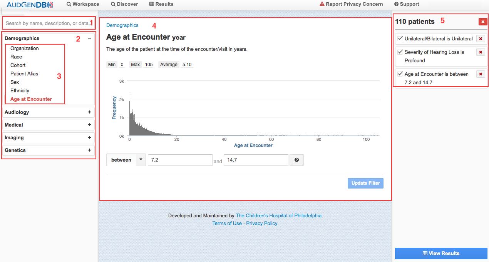

Anatomy of the Query Page
{kind=link}
Important Fields On The Query Page
1. Search Box for Query Concepts
Note the Search box located just above the Data Categories. The search box will find a data field or query concept in any data category that matches the keyword entered.
HINT: As the user types into the search box, the application identifies fields with keywords that start with the letters typed in, so that by the time the user types in “sen†the “Has Sensorineural Loss†category has been identified.
2. Data Categories
The tabs located on the left column of the application and also shown in the screenshot above group query concepts into larger data categories. Tabs that are active are colored, and lead to the drop-down menu shown by the expanded “Demographics” category in the image above. The fully implemented application will have data categories that encompass Demographics, Audiology, Medical, Imaging and Genetics.
3. Drop Down Menu of Query Concepts
When a data category is selected, a drop down menu will appear as a column on the left-hand side of the page. The drop down menu contains all query concepts associated with the selected category. While all of the options in the drop down are query concepts, some contain only one data field while others draw from multiple data fields to create a more complex query. A more detailed description of the query concepts and data fields can be found in Data Field Description page of the Documentation.
4. Graphics Tool for Criteria Selection
When a data field has been selected, a graphics tool will come up in the center of the application that provides an opportunity to refine the data selection. The graphics will also demonstrate the distribution of certain data points among the population in AudGenDB. In the example above, a graph of frequency vs. age shows the spread of ages in the entire AudGenDB population. For other searches, this tool may appear as a pie chart or bar graph.
HINT: To add a data concept to a query one must use the “Update Filter” button in the lower right hand corner of the screen. If one returns to this data concept and changes the query condition one must click “Update Filter† again.Â
5. Query Builder
The box located in the upper right hand corner of the screen displays all the selected query conditions. One can remove a query condition by clicking on the “X†at the top right corner of each panel.
When one is done adding query conditions, hit “View Results†to see the patient list.
{kind=link}